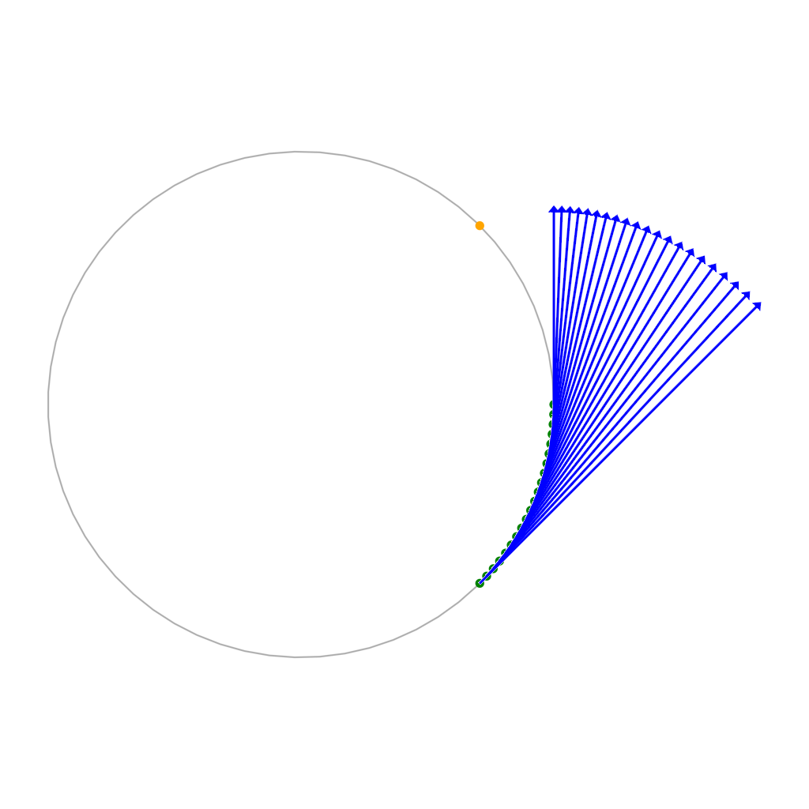
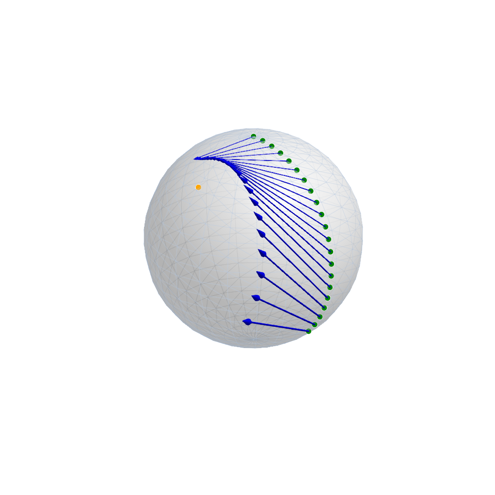
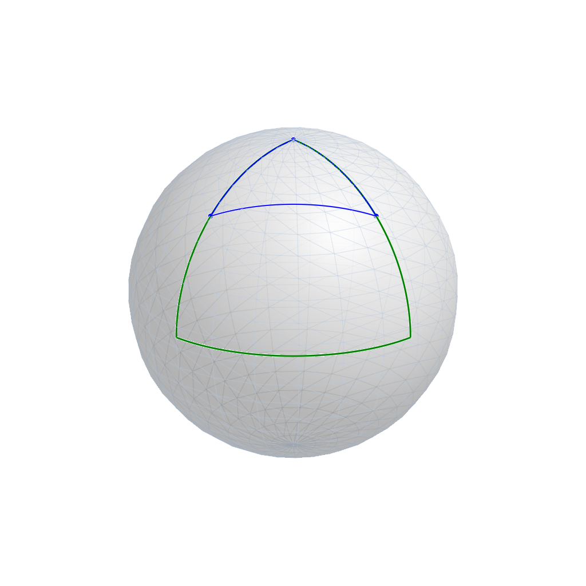
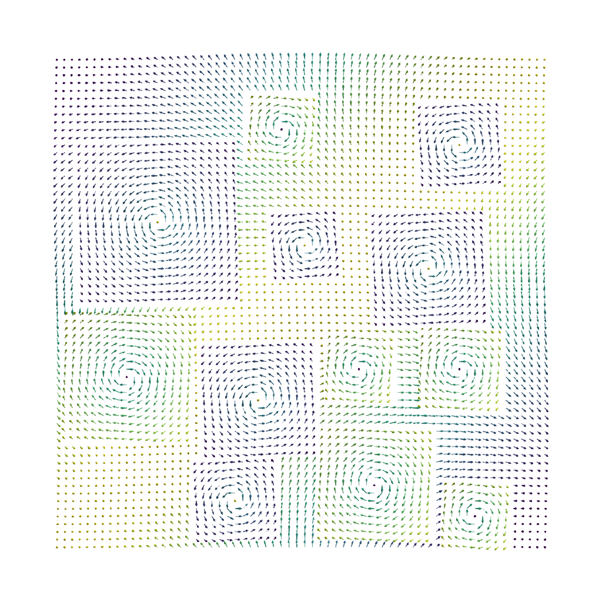

Plotting data on Spheres
On a sphere we can plot points and tangent vectors with the default scatter and arrows3d. To start a plot on a manifold, there is usually a manifoldplot function, here sphereplot to set up the figure and add here for example the sphere the data lives on.
The 1D Sphere $𝕊^1$
For the one-dimensional sphere, we obtain unit vectors in $ℝ^2$ or in other words points on the circle.
using Manifolds, ManifoldMakie, GLMakie
M = Manifolds.Sphere(1)
# Since S2 is the default case and its color is white, set S1 surface/boundary color
p = [1.0, 0.0]
q = [1/sqrt(2), -1/sqrt(2)]
r = [1/sqrt(2), 1/sqrt(2)]
pts = shortest_geodesic(M, p, q, 0:0.05:1.0)
vecs = [log(M, s, r) for s in pts]
fig, ax, pl = arrows2d(M, pts, vecs; color = :blue)
scatter!(ax, M, pts; color = :green, markersize = 16)
scatter!(ax, M, [r,]; color = :orange, markersize = 16)
fig
The 2D Sphere $𝕊^2$
On a sphere we can plot points and tangent vectors with the default scatter and arrows3d. To start a plot on a manifold, there is usually a manifoldplot function, here sphereplot to set up the figure and add here for example the sphere the data lives on.
using Manifolds, ManifoldMakie, GLMakie
M = Manifolds.Sphere(2)
p = [0.0, 0.0, 1.0]
q = [0.0, 1/sqrt(2), -1/sqrt(2)]
r = [1/sqrt(2), 0.0, 1/sqrt(2)]
pts = shortest_geodesic(M, p, q, 0:0.05:1.0)
vecs = [log(M, s, r) for s in pts]
fig, ax, pl = arrows3d(
M, pts, vecs; color = :blue,
minshaftlength = 0, shaftlength=.99, shaftradius = 0.004, tipradius = 0.016, tiplength = 0.1,
)
scatter!(ax, M, pts; color = :green, markersize = 16)
scatter!(ax, M, [r,]; color = :orange, markersize = 16)
fig
We can also use the geodesics and scattergeodesics functions here.
using Manifolds, ManifoldMakie, GLMakie
M = Manifolds.Sphere(2)
p1, p2, p3 = [1.0, 0.0, 0.0], [0.0, 1.0, 0.0], [0.0, 0.0, 1.0]
p1b, p2b, = [1/sqrt(2), 0, 1/sqrt(2)], [0, 1/sqrt(2), 1/sqrt(2)]
fig, ax, pl = geodesics(M, Point3f.([p1, p2, p3]); closed = true, color = :green, linewidth = 3)
scattergeodesics!(ax, M, Point3f.([p1b, p2b, p3]); closed = true, color = :blue, linewidth = 2, markersize = 12)
fig
A sphere-valued image
When dealing with a 2D array of data living on the sphere, for example a dataset of wind field directions, we can plot this as
using Manifolds, ManifoldMakie, ManoptExamples, GLMakie
M = Manifolds.Sphere(2)
img = ManoptExamples.artificial_S2_whirl_image()
fig, ax, pl = image(M, img)
fig
Function reference
ManifoldMakie.sphereplot — Function
sphereplot(::Manifolds.Sphere{ℝ, Manifolds.TypeParameter{Tuple{n}}}; kwargs...)Draw the Sphere(n), $n=1,2$ as a (transparent) surface with an overlaid wireframe.
This is called when you use
scatter(M, pts)to plot points thereonarrows3d(M, pts, vecs)to plot tangent vectorsgeodesics(M, pst)andscattergeodesics(M, pst)to draw geodesics
Keyword Arguments
size = (1024, 1024)passed to the generatedFigurebackgroundcolor = :whitepassed to the generatedFigureaxis = Dict{Symbol, Any}()specify keywords to pass to the internalAxisfigure = Dict{Symbol, Any}()specify keywords to pass to the internalFigure
all other keyword arguments are passed to the internal plot! call, so they can also be used to modify the listed properties below.
Examples
fig, ax = sphereplot(Manifolds.Sphere(2))for the 2-sphere $𝕊^2$ embedded in $ℝ^3$
fig, ax = sphereplot(Manifolds.Sphere(1))for the cyclic data on $𝕊^1$ embedded in $ℝ^2$
Alias
Figure(M; kwargs...) is an alias for this
Plot type
The plot type alias for the sphereplot function is SpherePlot.
Attributes
clip_planes = @inherit clip_planes automatic — Clip planes offer a way to do clipping in 3D space. You can set a Vector of up to 8 Plane3f planes here, behind which plots will be clipped (i.e. become invisible). By default clip planes are inherited from the parent plot or scene. You can remove parent clip_planes by passing Plane3f[].
depth_shift = 0.0 — Adjusts the depth value of a plot after all other transformations, i.e. in clip space, where -1 <= depth <= 1. This only applies to GLMakie and WGLMakie and can be used to adjust render order (like a tunable overdraw).
fxaa = true — Adjusts whether the plot is rendered with fxaa (fast approximate anti-aliasing, GLMakie only). Note that some plots implement a better native anti-aliasing solution (scatter, text, lines). For them fxaa = true generally lowers quality. Plots that show smoothly interpolated data (e.g. image, surface) may also degrade in quality as fxaa = true can cause blurring.
inspectable = @inherit inspectable — Sets whether this plot should be seen by DataInspector. The default depends on the theme of the parent scene.
inspector_clear = automatic — Sets a callback function (inspector, plot) -> ... for cleaning up custom indicators in DataInspector.
inspector_hover = automatic — Sets a callback function (inspector, plot, index) -> ... which replaces the default show_data methods.
inspector_label = automatic — Sets a callback function (plot, index, position) -> string which replaces the default label generated by DataInspector.
model = automatic — Sets a model matrix for the plot. This overrides adjustments made with translate!, rotate! and scale!.
overdraw = false — Controls if the plot will draw over other plots. This specifically means ignoring depth checks in GL backends
space = :data — Sets the transformation space for box encompassing the plot. See Makie.spaces() for possible inputs.
ssao = false — Adjusts whether the plot is rendered with ssao (screen space ambient occlusion). Note that this only makes sense in 3D plots and is only applicable with fxaa = true.
surfacealpha = 0.33 — surface alpha (0 = transparent, 1 = opaque).
surfaceboundary = 2 — thickness of the boundary surface (only $𝕊^1$)
surfaceboundarycolor = :black — color of the surface boundary ($𝕊^1$)
surfacecolor = :white — color of the surface ($𝕊^2$)
transformation = :automatic — Controls the inheritance or directly sets the transformations of a plot. Transformations include the transform function and model matrix as generated by translate!(...), scale!(...) and rotate!(...). They can be set directly by passing a Transformation() object or inherited from the parent plot or scene. Inheritance options include:
:automatic: Inherit transformations if the parent and childspaceis compatible:inherit: Inherit transformations:inherit_model: Inherit only model transformations:inherit_transform_func: Inherit only the transform function:nothing: Inherit neither, fully disconnecting the child's transformations from the parent
Another option is to pass arguments to the transform!() function which then get applied to the plot. For example transformation = (:xz, 1.0) which rotates the xy plane to the xz plane and translates by 1.0. For this inheritance defaults to :automatic but can also be set through e.g. (:nothing, (:xz, 1.0)).
transparency = false — Adjusts how the plot deals with transparency. In GLMakie transparency = true results in using Order Independent Transparency.
visible = true — Controls whether the plot gets rendered or not.
wirecolor = (:lightsteelblue, 0.4) — color of the wireframe lines drawn on top of the surface ($𝕊^2$).
wires = 24 — tessellation resolution (segments of the wireframe in every direction, $𝕊^2$).
wirewidth = 0.5 — linewidth of the wire ($𝕊^2$)
ManifoldMakie.spheredataimage — Function
image(M, x, y, image)
image(M, image)as an alias for
spheredataimage(M, x, y, image)
spheredataimage(M, image)Plots an image on a rectangle bounded by x and y (defaults to size of image).
Plot type
The plot type alias for the spheredataimage function is SphereDataImage.
Attributes
alpha = 1.0 — The alpha value of the colormap or color attribute. Multiple alphas like in plot(alpha=0.2, color=(:red, 0.5)), will get multiplied.
clip_planes = @inherit clip_planes automatic — Clip planes offer a way to do clipping in 3D space. You can set a Vector of up to 8 Plane3f planes here, behind which plots will be clipped (i.e. become invisible). By default clip planes are inherited from the parent plot or scene. You can remove parent clip_planes by passing Plane3f[].
colormap = :viridis — Sets the colormap that is sampled for numeric colors. PlotUtils.cgrad(...), Makie.Reverse(any_colormap) can be used as well, or any symbol from ColorBrewer or PlotUtils. To see all available color gradients, you can call Makie.available_gradients().
colorrange = automatic — The values representing the start and end points of colormap.
colorscale = identity — The color transform function. Can be any function, but only works well together with Colorbar for identity, log, log2, log10, sqrt, logit, Makie.pseudolog10, Makie.Symlog10, Makie.AsinhScale, Makie.SinhScale, Makie.LogScale, Makie.LuptonAsinhScale, and Makie.PowerScale.
depth_shift = 0.0 — Adjusts the depth value of a plot after all other transformations, i.e. in clip space, where -1 <= depth <= 1. This only applies to GLMakie and WGLMakie and can be used to adjust render order (like a tunable overdraw).
fxaa = true — Adjusts whether the plot is rendered with fxaa (fast approximate anti-aliasing, GLMakie only). Note that some plots implement a better native anti-aliasing solution (scatter, text, lines). For them fxaa = true generally lowers quality. Plots that show smoothly interpolated data (e.g. image, surface) may also degrade in quality as fxaa = true can cause blurring.
highclip = automatic — The color for any value above the colorrange.
inspectable = @inherit inspectable — Sets whether this plot should be seen by DataInspector. The default depends on the theme of the parent scene.
inspector_clear = automatic — Sets a callback function (inspector, plot) -> ... for cleaning up custom indicators in DataInspector.
inspector_hover = automatic — Sets a callback function (inspector, plot, index) -> ... which replaces the default show_data methods.
inspector_label = automatic — Sets a callback function (plot, index, position) -> string which replaces the default label generated by DataInspector.
lowclip = automatic — The color for any value below the colorrange.
model = automatic — Sets a model matrix for the plot. This overrides adjustments made with translate!, rotate! and scale!.
nan_color = :transparent — The color for NaN values.
overdraw = false — Controls if the plot will draw over other plots. This specifically means ignoring depth checks in GL backends
space = :data — Sets the transformation space for box encompassing the plot. See Makie.spaces() for possible inputs.
ssao = false — Adjusts whether the plot is rendered with ssao (screen space ambient occlusion). Note that this only makes sense in 3D plots and is only applicable with fxaa = true.
transformation = :automatic — Controls the inheritance or directly sets the transformations of a plot. Transformations include the transform function and model matrix as generated by translate!(...), scale!(...) and rotate!(...). They can be set directly by passing a Transformation() object or inherited from the parent plot or scene. Inheritance options include:
:automatic: Inherit transformations if the parent and childspaceis compatible:inherit: Inherit transformations:inherit_model: Inherit only model transformations:inherit_transform_func: Inherit only the transform function:nothing: Inherit neither, fully disconnecting the child's transformations from the parent
Another option is to pass arguments to the transform!() function which then get applied to the plot. For example transformation = (:xz, 1.0) which rotates the xy plane to the xz plane and translates by 1.0. For this inheritance defaults to :automatic but can also be set through e.g. (:nothing, (:xz, 1.0)).
transparency = false — Adjusts how the plot deals with transparency. In GLMakie transparency = true results in using Order Independent Transparency.
visible = true — Controls whether the plot gets rendered or not.